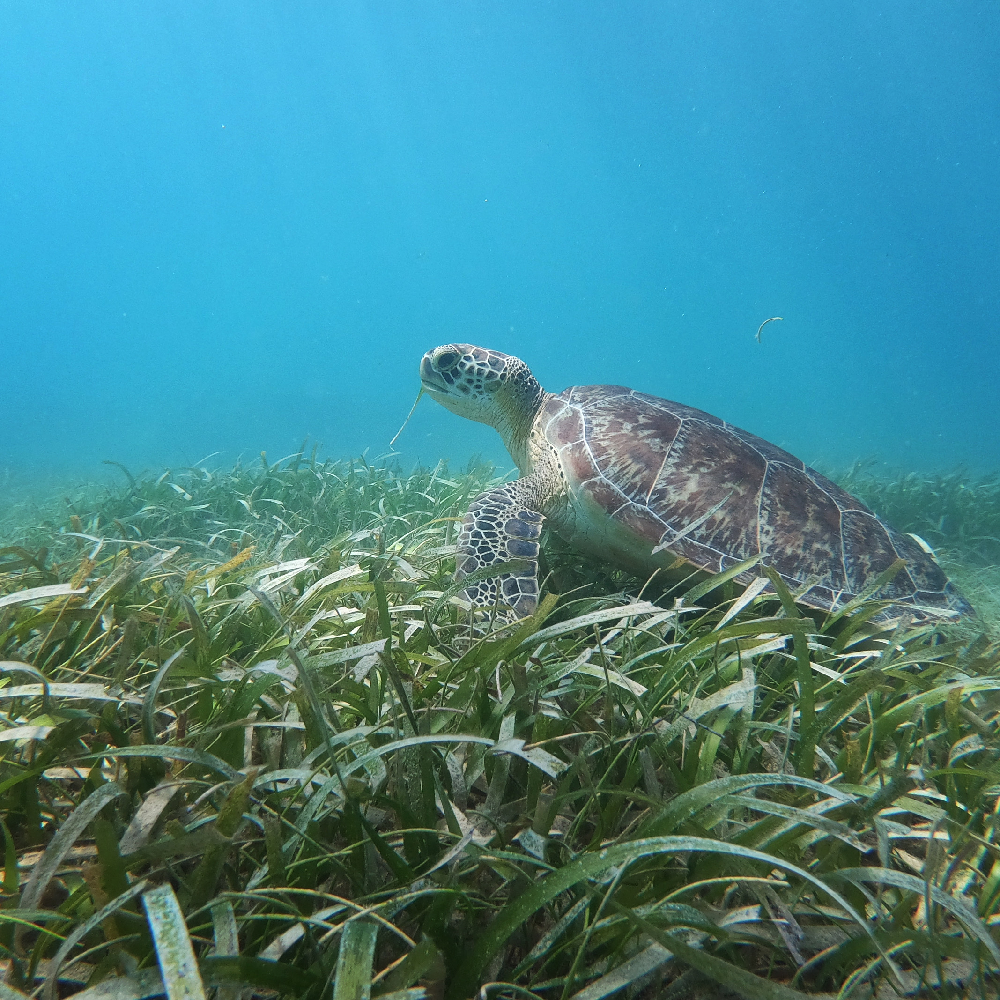
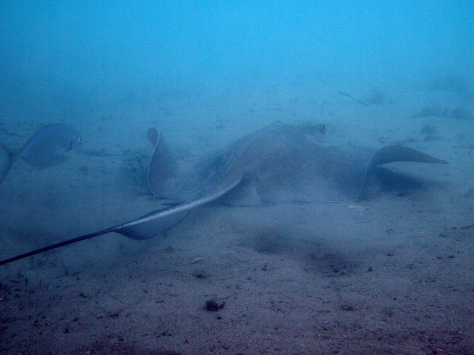

patowmack divers
|  |
Photo Credit: Ben Scheelk, Ocean Foundation |
Club business will start at 7:30, afterwards Marc will present "Life Aboard the Titanic” Once heralded as the grand, unsinkable ocean liner of the sea in 1912, the RMS Titanic sailed into legend after striking an iceberg and disappearing into oblivion, more than two miles on the ocean floor. Seventy-three years later, scientists discovered the dead wreck only to uncover a hidden ecosystem of sea life, from finless fish to wood-boring organisms. Board the RMS Titanic once again to discover the unique lifeforms that have inhabited the legendary ocean liner for more than century.
 |
| (C) National Geographic, 2012 |
Club business will start at 7:30 afterwards Mike will give us the scoop on diving at Lake Phoenix, which used to be called Lake Rawlings.
Club business will start at 7:30 afterwards Jason Frohnmayer will present NOAA’s involvement with Marine Protected Areas.
Sarah will present information to us about the Ocean Foundation’s SeaGrass Grow program. Next, we will watch some some diving videos produced by WK, a fellow diver that club members met on the trip to the Solomon’s last November.
Liz will present pictures from her recent dive trip to Turneffe Island in Belize. Gloria has some whale pictures from Tahiti.
 |
 |
Paul, Bruce B. and Ed will give a report and show pictures from their pre-stay-at-home/pre-social-distancing trip to the Blue Heron Bridge at Riviera Beach, Florida. We will have an update on the closure status of Phil Foster Park.
 |
 |
 |
 |
This is a chance for members who cannot drive to our meeting to join us from home.
> |

 Follow us on Facebook!
or email us at "dive at patowmackdivers.com" replace at with @
Follow us on Facebook!
or email us at "dive at patowmackdivers.com" replace at with @
Copyright (c) 2011-2023 Patowmack Divers.com. All rights reserved.